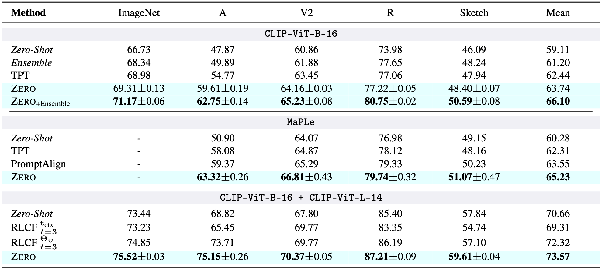
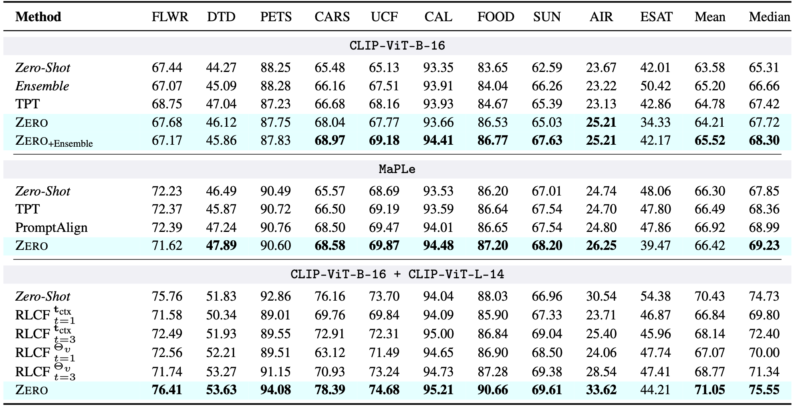

Vision-Language Models seamlessly discriminate among arbitrary semantic categories,
yet they still suffer from poor generalization when presented with challenging examples.
For this reason, Episodic Test-Time Adaptation (TTA) strategies have recently emerged as powerful techniques to adapt VLMs in the presence of a single unlabeled image.
The recent literature on TTA is dominated by the paradigm of prompt tuning by Marginal Entropy Minimization,
which, relying on online backpropagation, inevitably slows down inference while increasing memory.
In this work, we theoretically investigate the properties of this approach
and unveil that a surprisingly strong TTA method lies dormant and hidden within it.
We term this approach ZERO (TTA with “zero” temperature), whose design is both incredibly effective and frustratingly simple:
augment N times, predict, retain the most confident predictions, and marginalize after setting the Softmax temperature to zero.
Remarkably, ZERO requires a single batched forward pass through the vision encoder only and no backward passes.
We thoroughly evaluate our approach following the experimental protocol established in the literature
and show that ZERO largely surpasses or compares favorably w.r.t. the state-of-the-art
while being almost 10× faster and 13× more memory friendly than standard Test-Time Prompt Tuning.
Thanks to its simplicity and comparatively negligible computation, ZERO can serve as a strong baseline for future work in this field.
TLDR; Don't forget about majority voting when you evaluate your TTA method :)
def zero(image, z_txt, N, gamma, temp):
"""
:param z_txt: pre-computed text embeddings (C,hdim)
:param temp: model’s original temperature
:param augment: takes (C,H,W) and returns (N,C,H,W)
:param gamma: filtering percentile (e.g., 0.3)
"""
views = augment(image, num_views=N) # generate augmented views
l = model.image_encoder(views) @ z_txt.t() # predict (unscaled logits)
l_filt = confidence_filter(l, temp, top=gamma) # retain most confident preds
zero_temp = torch.finfo(l_filt.dtype).eps # zero temperature
p_bar = (l_filt / zero_temp).softmax(dim=1).sum(dim=0) # marginalize
return p_bar.argmax()
Robustness to Natural Distribution Shifts
Fine-grained Classification
